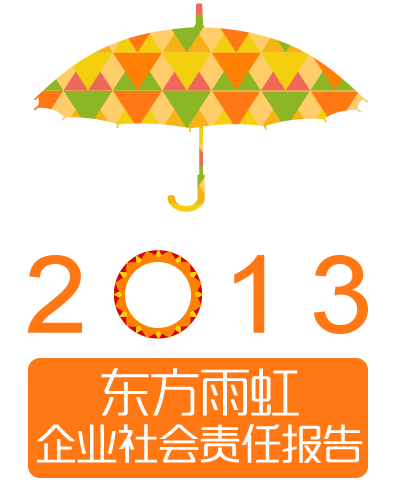

<!DOCTYPE html PUBLIC "-//W3C//DTD XHTML 1.0 Transitional//EN" "http://www.w3.org/TR/xhtml1/DTD/xhtml1-transitional.dtd">
<html xmlns="http://www.w3.org/1999/xhtml">
<head>
<meta http-equiv="X-UA-Compatible" content="IE=Edge">
<meta http-equiv="Content-Type" content="text/html; charset=utf-8" />
<title>东方雨虹</title>
<link href="style/main.css" rel="stylesheet" type="text/css" />
<link href="style/index.css" rel="stylesheet" type="text/css" />
<script language="javascript" type="text/javascript" src="script/jquery-1.7.1.min.js"></script>
<script language="javascript" type="text/javascript" src="script/jquery.smoothScroll.js"></script>
<script language="javascript" type="text/javascript" src="script/tween.js"></script>
<script language="javascript" type="text/javascript" src="script/js.js"></script>
<script language="javascript" type="text/javascript" src="script/fun.js"></script>
<script language="javascript" type="text/javascript" src="script/easing.js"></script>
<!--[if lte IE 6]>
<script src="script/png.js" type="text/javascript"></script>
    <script type="text/javascript">
        DD_belatedPNG.fix('div, ul, img, li, input , a');
    </script>
<![endif]--> 
</head>

<body>
<div class="wal headDiv"><a href="" class="logo"></a></div>
<div class="topImg"></div>
<div class="wal nav">
    <ul>
      <li class="li_01"><a href="javascript:;"><div>关于本报告</div>About the report</a></li>
      <li class="li_02"><a href="javascript:;"><div>董事长致辞</div>Message from <br />the Chairman</a></li>
      <li class="li_03"><a href="javascript:;"><div>关于东方雨虹</div>About Oriental Yuhong</a></li>
      <li class="li_04"><a href="javascript:;"><div>科技亮剑</div>Technological <br />innovations</a></li>
      <li class="li_05"><a href="javascript:;"><div>品质经营 稳健发展</div>Quality operatoin, <br />steady development</a></li>
      <li class="li_06"><a href="javascript:;"><div>安全责任</div>Safety responsibility</a></li>
      <li class="li_07"><a href="javascript:;"><div>资源与环境</div>Resources and <br />environment</a></li>
      <li class="li_08"><a href="javascript:;"><div>人权与劳工实践</div>Human rights and <br />labor practices</a></li>
      <li class="li_09"><a href="javascript:;"><div>争做优秀企业公民</div>Strive to be an <br />excellent corporate citizen</a></li>
      <li class="li_10"><a href=""><div>下载</div>Download</a></li>
    </ul>
</div>
<div class="parallax-holder" style="height: 1015px;"></div>
<div class="wal" style="">
<!--wal-->
<div class="indexPart1">
      <div class="tab">
           <ul>
              <li class="liNow"><div></div></li>
              <li><div></div></li>
              <li><div></div></li>
              <li><div></div></li>
              <li><div></div></li>
              <li><div></div></li>
              <li><div></div></li>
              <li><div></div></li>
              <li><div></div></li>
           </ul>
           <span class="clear_f"></span>
      </div>
      <div class="tabContentDiv">
           <div class="tabContent indexPart1_01">
                 <ul>
                   <li>
                      <div class="name orange">本报告是东方雨虹 2009 年建立报告发布制度以来，连续发布的第六份企业社会责任报告，是公司 2013 年度履行经济、环境、社会三大责任的真实反映。我们对相关情况做出如下说明：</div>
                      <div class="content">A real reflection to Oriental Yuhong's actions of implementing economic, environmental, and social responsibilities in 2013, this report is the sixth corporate social responsibility report (CSR report) since Oriental Yuhong established CSR report release system in 2009. The following are explanations to the CSR report.
                      </div>
                   </li>
                   <li>
                      <h1><i>报告主体</i>Scope of the Report</h1>
                      <div class="name">北京东方雨虹防水技术股份有限公司</div>
                      <div class="content">
                           The report is about Beijing Oriental Yuhong Waterproof Technology Co., Ltd.
                      </div>
                   </li>
                   <li>
                      <h1><i>指代说明</i>Abbreviations Used</h1>
                      <div class="name">"北京东方雨虹防水技术股份有限公司"在报告中也以"东方雨虹"或"公司"表示。</div>
                      <div class="content">
                           The word "Oriental Yuhong" or "The company" herein refers to Beijing Oriental Yuhong Waterproof Technology Co., Ltd.
                      </div>
                   </li>
                   <li>
                      <h1><i>时间范围</i>Reporting Period</h1>
                      <div class="name">2013 年 1 月 1 日至 12 月 31 日。考虑到披露的延续性和可比性，部分信息内容在时间上向前或向后适当延伸。</div>
                      <div class="content">
                           The reporting period is from January 1 to December 31, 2013. In consideration of continuity and comparison of disclosure, a part of information is extended back or forth on the basis of time. 
                      </div>
                   </li>
                   <li>
                      <h1><i>报告周期</i>Reporting Cycle</h1>
                      <div class="name">本报告为年度报告。</div>
                      <div class="content">
                          This report is published annually. 
                      </div>
                   </li>
                   <li>
                      <h1><i>编写原则</i>Report compilation principles</h1>
                      <div class="name">客观、规范、诚信、透明。</div>
                      <div class="content">
                           objectivity, standardization, sincerity, and transparency
                      </div>
                   </li>
                   <li>
                      <h1><i>信息来源</i>Sources of Data</h1>
                      <div class="name">相关信息和数据均来自北京东方雨虹防水技术股份有限公司及所属的全资子公司或控股公司。</div>
                      <div class="content">
                           Related information and data herein are from Beijing Oriental Yuhong Waterproof Technology Co., Ltd. and its wholly-owned subsidies or holding companies. 
                      </div>
                   </li>
                   <li>
                      <h1><i>报告改进</i>Report Improvement</h1>
                      <div class="name">为了使报告更加客观、全面、重点反映公司的履责实践，2013 年报告增加了"提升产品和服务质量"，细化"人权"等重要社会责任议题内容，在内容披露上更加注重案例的描述。 东方雨虹企业社会责任报告编写小组通过对所属企业履责情况进行实地调研，就企业案例的真实性进行筛选核准，在报告编写过程中广泛听取各方意见和建议，积极回应利益相关方的关注点。</div>
                      <div class="content">
To make the CSR report more objective, comprehensive, and reflecting the company's CSR implementation, the new topic "improving product & service quality" is added to the CSR report for 2013 and the topic "human rights" includes more details. Furthermore, more importance is attached to the descriptions over corporate cases. On the basis of on-site investigation, screening and examination of the authenticity of corporate cases, in the process of report writing, the compilation team of the CSR report widely listened to the opinions and suggestions of different sides, and gave active responses to the concerns of stakeholders.
                      </div>
                   </li>
                   <li>
                      <h1><i>编写依据</i>编写依据</h1>
                      <div class="name">参照全球报告倡议组织 (GRI) 《可持续发展报告指南》（G3.1）、参考中国社科院《中国企业社会责任报告编写指南（CASS-CSR2.0）》国际标准化组织《ISO26000：社会责任指南（2010）》和中国工业经济联合会《中国工业企业及工业协会社会责任指南 GSRI-CHINA2.0》编写。</div>
                      <div class="content">
The report is prepared in accordance with Sustainability Reporting Guidelines (G3.1)by Global Reporting Initiative (GRI), The Guideline on Compilation of Corporate Social Responsibility Reports for Chinese Enterprises (CASS-CSR2.0) by Chinese Academy of Social Sciences, ISO26000 Social Responsibility Guidance (2010)by International Organization for Standardization, and Guidelines on Social Responsibilities of Chinese Industrial Enterprises and Industrial Associations (GSRI-CHINA2.0) by China Federation of Industrial Economics.
                      </div>
                   </li>
                   <li>
                      <h1><i>语言版本</i>Language</h1>
                      <div class="name">本报告中文形式发布。</div>
                      <div class="content">
                           The report is presented in Chinese. 
                      </div>
                   </li>
                   <li>
                      <h1><i>报告获取</i>Access to the report S</h1>
                      <div class="name">本报告仅提供电子版。PDF 版请登录公司网站 http://www.yuhong.com.cn 下载 APP 应用请扫描右侧二维码。（联系电话：010-59031829 电子邮箱：libz@yuhong.com.cn）。。</div>
                      <div class="content">
                           The report is published only in online version. You can visit the Company's website http://www.yuhong.com.cn for an online ODF version, or scan the right QR code to download related application (Contact telephone: 010-59031829 Email: libz@yuhong.com.cn).
                      </div>
                   </li>
                 </ul>
           </div>
           <div class="tabContent indexPart1_01">董事长致辞--暂无数据</div>
           <div class="tabContent indexPart1_01">关于东方雨虹--暂无数据</div>
           <div class="tabContent indexPart1_01">科技亮剑--暂无数据</div>
           <div class="tabContent indexPart1_01">品质经营 稳健发展--暂无数据</div>
           <div class="tabContent indexPart1_01">安全责任--暂无数据</div>
           <div class="tabContent indexPart1_01">资源与环境--暂无数据</div>
           <div class="tabContent indexPart1_01">人权与劳工实践--暂无数据</div>
           <div class="tabContent indexPart1_01">争做优秀企业公民--暂无数据</div>
      </div>
</div>
<!---->
<div class="indexPart2">
    <h1>往年社会责任报告</h1>
    <div class="list">
      <ul>
           <li>
               <div class="imgDiv"><a href=""></a></div>
               <div class="title">1998年-2008年</div>
           </li>
           <li>
               <div class="imgDiv"><a href=""></a></div>
               <div class="title">2009年</div>
           </li>
           <li>
               <div class="imgDiv"><a href=""></a></div>
               <div class="title">2010年</div>
           </li>
           <li>
               <div class="imgDiv"><a href=""></a></div>
               <div class="title">2011年</div>
           </li>
           <li>
               <div class="imgDiv"><a href=""></a></div>
               <div class="title">2012年</div>
           </li>
           <li>
               <div class="imgDiv"><a href=""></a></div>
               <div class="title">2013年</div>
           </li>
      </ul>
      <span class="clear_f"></span>
    </div>
</div>
<!--walEnd-->
</div>
<script>
			$(document).ready(function(){
				$(window).smoothScroll();
			});
		</script>
</body>
</html>